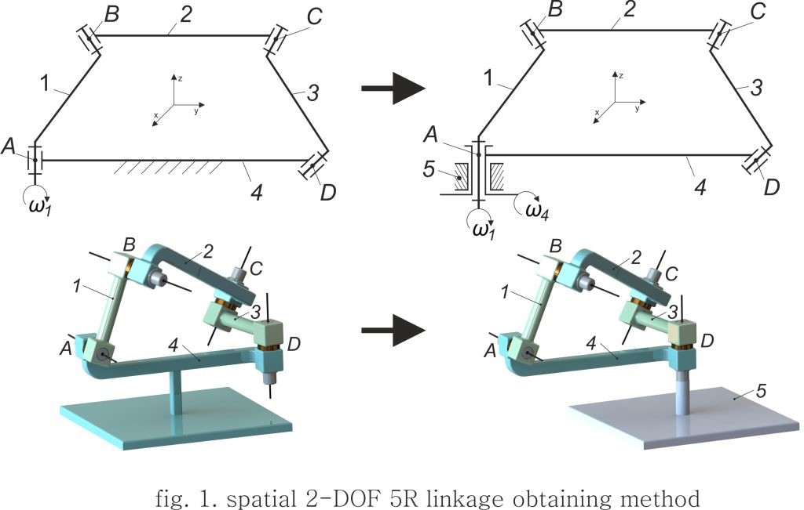
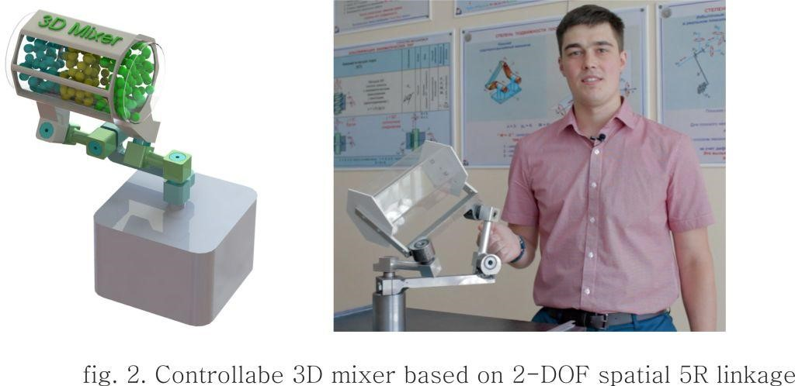

In general, the spatial nR linkage with one degree of freedom (DOF) has a wide application, due to its simple controllable. The use of 2-DOF linkages at the construction of devices is difficult causes its structural synthesis and analysis. This work presents the type synthesis of 2-DOF spatial 5R linkage based on Bennett’s linkage. The main idea is based on method named as “fixed joint”. The method consists of 2 parts. Firstly, we take spatial 4R linkage with 1-DOF and transform fixed link to the movable link. Secondly, in this linkage we transform any movable joint to the fixed joint (fig. 1). Thus we obtain a new 2-DOF spatial 5R linkage.
The configuration of the 5R linkage was defined by the structure analysis and graphical simulations.Also considers the secrets of paradoxical mobility, the methods of design, manufacture and assembly.
For industrial application, this mechanism has been used to construct a controllable 3D mixer. The computer and experimental model was obtained and investigated (fig. 2).